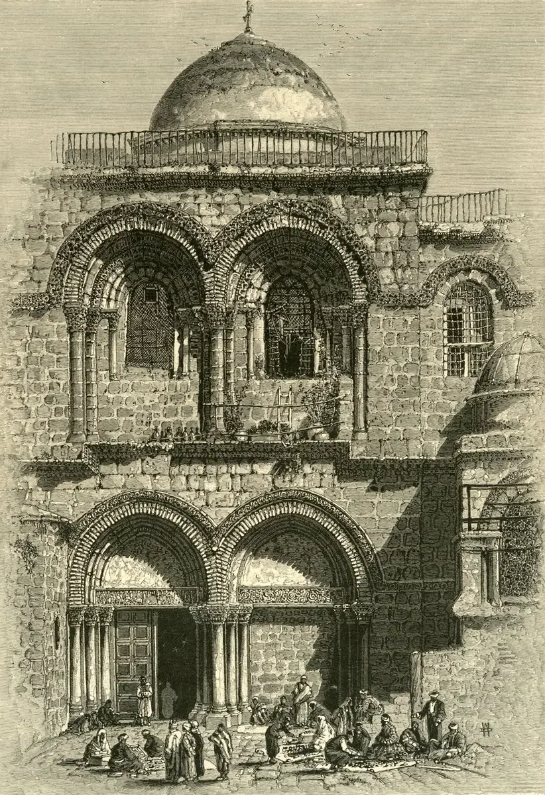
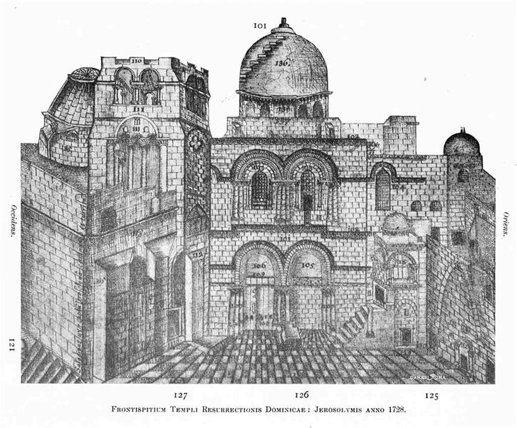
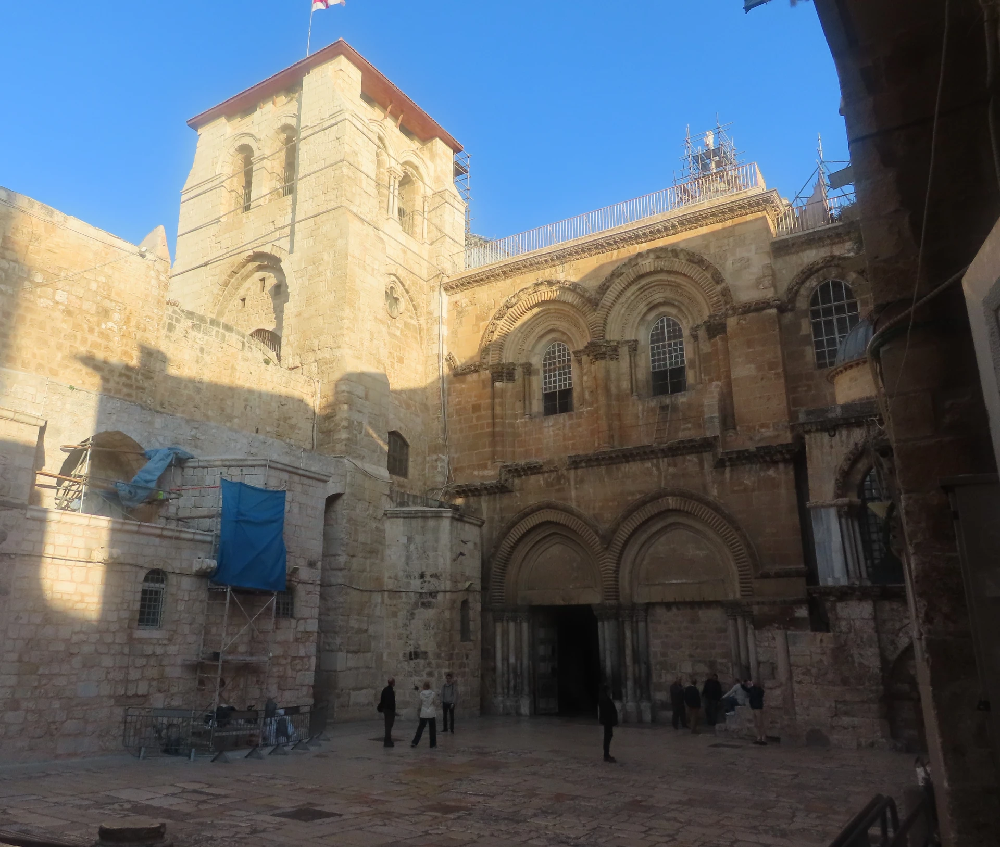
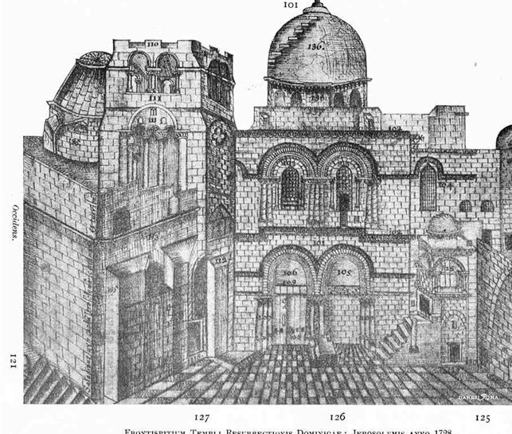
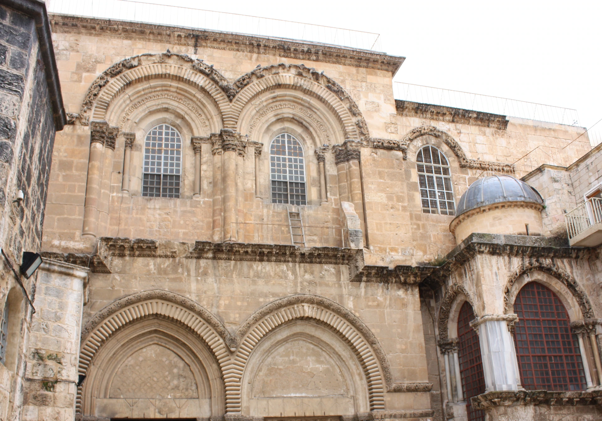
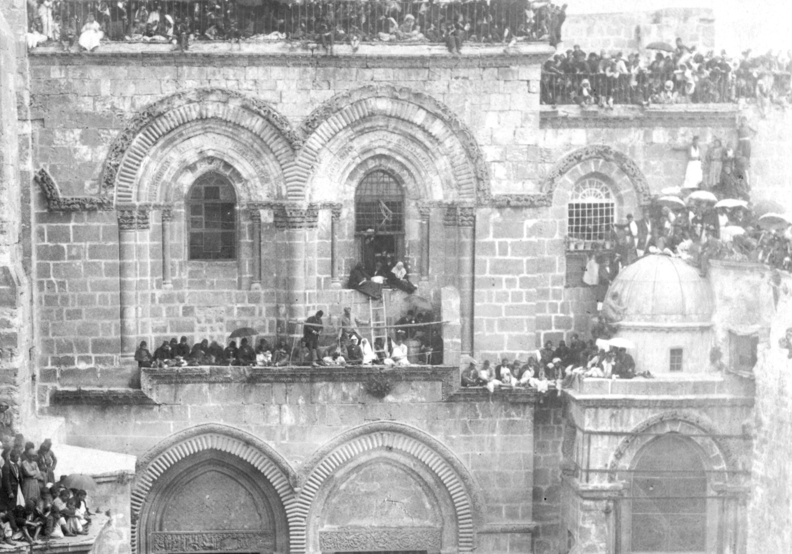
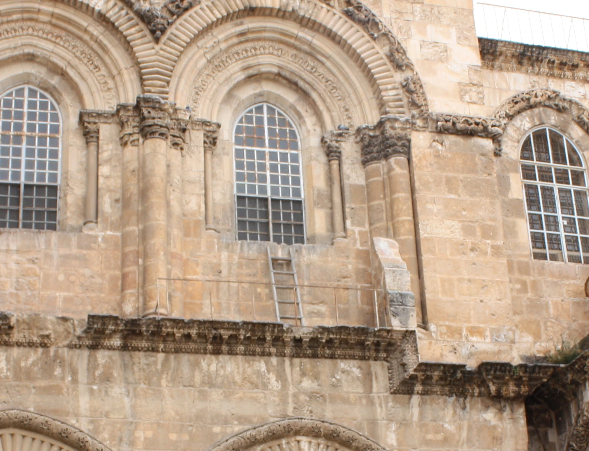
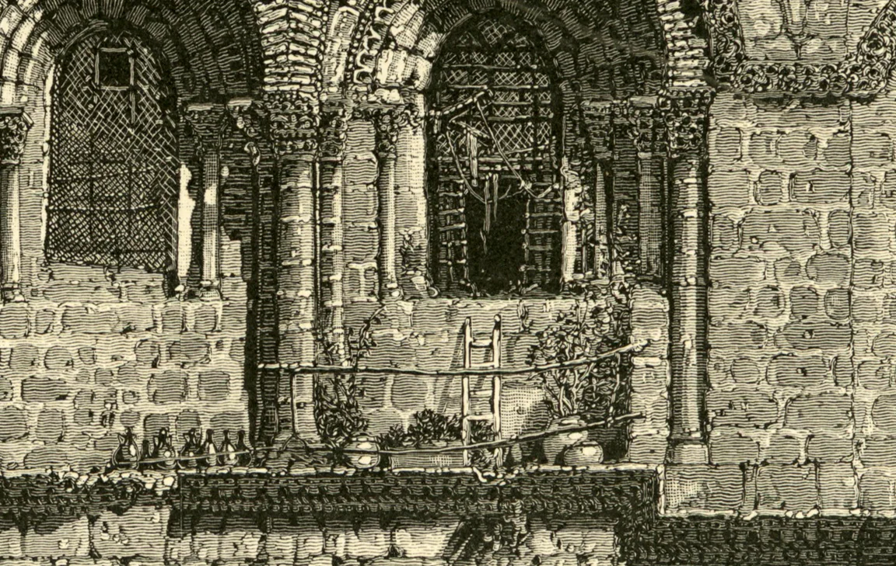

아직 펼치지 않은 카드가장 긴 한 주 · 4움직이지 않는 사다리이 작은 사다리는 왜 수백 년 동안 그 자리에 있을까요?창문 아래 작은 사다리가 있어. 왜 아무도 안 치울까?
1728년 · 오늘예루살렘 · 성묘교회 앞마당
움직이지 않는 사다리
예루살렘 성묘교회는 그리스도인들이 예수의 무덤 자리로 전해 온 곳에 세운 교회예요. 그 정문 위, 창문 아래로 튀어나온 좁은 돌 난간에 나무 사다리 하나가 기대어 있어요. 1728년 판화에도, 1880년대 사진에도, 2019년 사진에도 같은 자리에 있어요. 손잡이를 밀어 그때와 지금을 겹쳐 보세요.
아주 오래된 교회 창문 아래에 작은 사다리가 있어. 옛날 그림이랑 지금 사진을 겹쳐서 사다리를 찾아볼까?
검수 전 시안이에요(기준서 1판). 장면에는 기록과 백과사전, 성지 안내 기관 자료에 있는 것만 옮겼고, 사다리가 놓인 까닭처럼 확실하지 않은 것은 전해지는 이야기라고 밝혔어요. 상상은 ‘눈 감고 상상해 보기’에만 썼어요.
시안 확인용카드 단계 미리 보기
1
1728년의 판화
프란치스코회(가톨릭 수도회) 수도사 엘제아르 호른(Elzear Horn)이 새긴 성묘교회 판화예요. 예루살렘에서 성지를 돌보는 프란치스코회는 이 판화를 1728년 것으로 봐요.
아래의 라틴어 글은 ‘주님 부활 성당의 정면, 예루살렘, 1728년’이라는 뜻이에요(이 안내서가 옮김). 이 교회는 ‘부활 성당’이라고도 불려요. 위키백과는 이 판화를 사다리가 나오는 가장 오래된 그림으로 ‘아마도’라는 말을 붙여 소개해요.

300년쯤 전에 손으로 새긴 교회 그림이야.
물어보기위층 오른쪽 창문 아래를 보면 무엇이 있을까?
2
앞마당에서 올려다보면
교회 앞마당에 서서 정문 위를 올려다봐요. 정문 바로 위 큰 아치 창문 두 개 가운데 오른쪽 창문 아래, 좁은 돌 난간에 나무 사다리 하나가 벽에 기대어 있어요.
손잡이를 밀어 옛 그림·사진과 오늘 사진을 겹쳐 보세요. 판화와 사진은 보는 자리와 방향이 조금씩 달라서 꼭 들어맞지는 않아요.
가운데 손잡이를 밀어 그때와 지금을 겹쳐 보세요. 정문 위 두 창문 가운데 오른쪽 창문 아래를 보세요.


왼쪽 · 1728년 판화(엘제아르 호른) · 엘제아르 호른 판화 · 퍼블릭 도메인 · 위키미디어 공용
오른쪽 · 성묘교회 앞마당 · 2019년 10월 이른 아침 · 사진: Fallaner · CC BY-SA 4.0 · 위키미디어 공용
왼쪽 종탑과 가운데 정면, 위층 두 창문의 자리가 1728년 판화와 거의 같아요. 판화는 손으로 새긴 그림이라 모양과 크기가 조금 달라요.


왼쪽 · 1880년대 사진 · 종교 행사 날의 성묘교회 정면 · 사진: 루이지 피오릴로(Luigi Fiorillo) · 퍼블릭 도메인 · 위키미디어 공용(미국 의회도서관)
오른쪽 · 성묘교회 정면 · 2010년 2월 · 사진: Wknight94 · CC BY-SA 3.0 · 위키미디어 공용
1880년대 사진은 종교 행사로 사람들이 가득 모인 날이에요. 위층 난간에도 사람들이 앉아 있고, 오른쪽 창문 아래 사다리가 보여요. 2010년에도 사다리는 같은 자리에 있어요.
앞마당에서 위를 올려다봐. 창문 아래 작은 사다리 보이니?
물어보기옛날 그림이랑 지금 사진, 사다리가 같은 자리에 있어?
3
난간 위의 사다리
사다리가 글에 처음 나오는 것은 1757년, 그때 예루살렘을 다스리던 오스만 제국 술탄의 칙령(임금의 명령)이에요. 1852년 칙령에도 나와요. 두 칙령은 이 교회를 함께 쓰는 교회들의 몫(어느 자리를 어느 교회가 맡는지)을 나누고, 그 몫을 그대로 두게 했어요. 이 약속을 ‘현상 유지(지금 모습 그대로 두기)’라고 불러요. 그래서 이 교회에서는 함께 쓰는 교회들이 모두 동의해야만 무엇이든 옮기거나 고칠 수 있어요.
이 건물은 서로 다른 여섯 교회가 함께 써요. 가톨릭, 그리스 정교회, 아르메니아 사도 교회가 큰 몫을 맡고, 시리아 정교회·콥트 정교회·에티오피아 정교회가 작은 몫을 맡아요.

학자 제롬 머피오코너(Jerome Murphy-O’Connor)는 이 창문과 난간, 사다리가 모두 아르메니아 교회의 것이라고 적었어요. 다르게 쓴 기록도 있어요(아래 ‘기록마다 다른 점’).
좁은 난간 위에 사다리가 벽에 기대어 있어.
물어보기저 사다리를 옮기려면 누구한테 물어봐야 할까?
4
왜 거기에 있을까
사다리가 처음에 왜 그 자리에 놓였는지는 확실하지 않아요. 여러 이야기가 전해져요. 1880년대 책 그림에는 사다리 옆 난간에 화분과 항아리가 줄지어 놓여 있어요.
1757년부터 지금까지 사다리는 두 번 잠깐 옮겨진 것 말고는 늘 그 자리에 있었어요. 1997년에는 한 관광객이 사다리를 교회 안에 숨긴 일이 있었다고 해요. 사다리는 다시 그 자리에 놓였어요.

사다리는 처음에 왜 거기 놓였을까요? 전해지는 이야기 가운데 하나를 골라 보세요.
옛날 그림에는 사다리 옆에 화분이 있어!
물어보기사다리는 처음에 왜 놓였을까?
눈 감고 상상해 보기
앞마당 돌바닥이 햇볕에 따뜻해요. 사람들 말소리 사이로 종소리가 울려요. 고개를 들면 정문 위 좁은 난간에 작은 나무 사다리가 기대어 있어요. 몇백 년 동안 수많은 사람이 이 자리에서 같은 사다리를 올려다봤어요.
눈을 감아 봐. 사람들이 웅성웅성, 종이 댕댕. 고개를 들면 작은 사다리가 보여.
나의 자리
사다리를 처음 거기 둔 사람은, 몇백 년 뒤에도 사람들이 앞마당에서 이 사다리를 올려다볼 줄 알았을까요?
사다리를 처음 놓은 사람은 누구였을까? 그 사람에게 무엇을 물어보고 싶어?
마음에 닿는 한 줄을 고르거나 직접 써 보세요. 한 줄을 남기면 이 자리의 도장이 찍혀요. 이 기기에만 저장돼요.
더 깊이
이야기를 보다 궁금해질 만한 것들이에요. 답을 읽거나 짧은 영화로 보세요.
1997년 관광객은 그 높은 사다리를 어떻게 숨겼어요?
드나들 때마다 돈을 냈다면, 수도자들은 어디서 바람을 쐬었어요?
뒷이야기
아직 펼치지 않은 이야기예요. 누르면 이야기가 펼쳐지고 색이 돌아와요. 더 알고 싶으면 근거를 따라가 보세요.
다 펼치면, 다음에 오실 때 새 이야기가 찾아와요.
오늘의 뒷이야기는 여기까지예요. 다음에 오시면 새 이야기가 기다리고 있어요.
펼친 뒷이야기 · 누르면 다시 볼 수 있어요
더 찾아보기
기록마다 다른 점
사다리의 주인 학자 머피오코너는 창문·난간·사다리가 아르메니아 교회 것이라고 적었고, 작가 아모스 엘론(Amos Elon)은 1995년에 그리스 정교회 것이라고 썼어요.
1757년 칙령을 내린 술탄 위키백과 안에서도 압뒬하미트 1세로 적은 곳과 오스만 3세로 적은 곳이 있어요.
약속이 굳어진 해 현상 유지를 굳힌 칙령을 1852년으로도, 1853년으로도 적어요.
이 교회가 기억하는 말씀
그리스도인들은 이 교회가 예수가 십자가에 달리고 묻힌 곳에 세워졌다고 전해 왔어요. 본문은 뜻만 옮기고, 대한성서공회 개역개정으로 이어 드려요.
요한복음 19장 41~42절 예수가 십자가에 달린 곳에 동산이 있었고, 그 동산에 아직 아무도 묻히지 않은 새 무덤이 있었어요. 무덤이 가까워서 거기에 예수를 모셨어요.
마가복음 16장 5~6절 사흘째 아침, 무덤에 간 여인들에게 흰 옷 입은 청년이 예수가 살아나 여기 계시지 않다고 말해요.
직접 가 보기
확인한 날 · 2026년 11월 18일 · 바뀌기 쉬운 정보라 정기적으로 다시 확인해요
이스라엘 예루살렘 옛 시가지의 그리스도교 구역에 있어요. 예루살렘 그리스도교 정보 센터(프란치스코회)는 겨울에 새벽 4시~저녁 7시(3월은 7시 30분까지), 여름에 새벽 5시~저녁 8시 45분(10월은 8시까지) 연다고 안내해요.
2026년에는 전쟁으로 40일 동안 닫혔다가 4월 9일에 다시 열렸고, 9월 1~2일처럼 행사로 잠깐 닫는 날도 있었어요. 떠나기 전에 외교부 해외안전여행 누리집에서 여행경보를 꼭 확인해요.
그때와 지금 끝까지 금박
그림 두 쌍을 손잡이로 양쪽 끝까지 밀어 보면 카드에 금박이 입혀져요.
두 쌍 모두 손잡이를 양쪽 끝까지 밀어 겹쳐 보기
사다리의 까닭 채색
둘 가운데 하나만 해도 카드가 채색돼요.
사다리가 처음 놓인 까닭, 전해지는 이야기 하나 고르기
아이와 함께 ‘영화처럼 보기’를 끝까지 보기
근거 보기 (12)
- 위키백과(길잡이): Immovable Ladder — 프란치스코회 수도사 엘제아르 호른의 판화(성지 관리 프란치스코회가 1728년으로 봄, ‘아마도’ 가장 오래된 그림), 1757년 칙령에 처음 나옴(술탄 이름이 문서 안에서 엇갈림), 1852년 칙령에도 나옴, 위층 오른쪽 창문 아래 난간, 머피오코너(아르메니아)·엘론(그리스 정교회)의 엇갈린 기록, 여러 설(석공·바깥바람·밧줄로 물과 먹을 것·채소·튀르키예 쪽 자료(2017~2018년 언론)의 창문 닦기), 1997년 관광객이 숨김, 1834·1842년 그림, 1850년대 첫 사진, 화분이 있는 책 그림
- 위키백과(길잡이): Church of the Holy Sepulchre — 여섯 교회(가톨릭·그리스 정교회·아르메니아 사도 교회가 큰 몫, 시리아·콥트·에티오피아 정교회가 작은 몫), 1757년 칙령과 1852/53년 칙령, 사다리는 1757년부터 두 번 잠깐 옮겨진 것 말고는 그 자리, 오른쪽 문은 돌로 막힘, 열쇠를 맡은 조데 집안과 문지기 누세이베 집안
- 위키미디어 공용: 1880년대 피오릴로 사진(미국 의회도서관 설명 ‘종교 행사, 예루살렘’)
- 위키미디어 공용: 데이비드 로버츠 「성묘교회 입구」 — 『성지』(런던, 1842~1845) 1권 속표지, 루이 아게 석판, 1842년(미국 의회도서관 설명)
- 위키미디어 공용: 존 더글러스 우드워드 그림 『그림 같은 팔레스타인』(1881~1884) — 앞마당에서 묵주와 성물을 사는 순례자들, 난간의 화분
- 예루살렘 그리스도교 정보 센터(프란치스코회): 성지 여는 시간(2026-09-15 갱신) — 성묘교회 겨울 4:00~19:00(3월 19:30), 여름 5:00~20:45(10월 20:00)
- 예루살렘 그리스도교 정보 센터: 2026년 9월 1~2일 임시 휴관 알림
- 오소독스 타임스(2026-04-09): 성묘교회가 40일 만에 다시 열림
- 아틀라스 옵스큐라: 사다리를 둘러싼 이야기(다섯 칸 나무 사다리, 현상 유지, 누가 옮길 권리가 있는지 아무도 말할 수 없고 옮기면 현상 유지를 어기는 것으로 보여 그대로 남음 — 열쇠 물음 1, 문이 하나뿐 — 뒷이야기)
- 커스트(L. G. A. Cust), 『성지의 현상 유지』(1929, 영국 위임 통치 정부 · 위키문헌) — 지붕이나 바닥을 고칠 권한은 혼자 차지할 권리, 주인이 엇갈리는 곳에서는 서로 상대가 고치거나 비용을 나누는 것을 받아들이지 않음(열쇠 물음 1) · 정문 위 비잔틴 시대의 돌 난간은 아르메니아 성 요한 경당 창문으로 나가 앞마당 행사 때 씀(열쇠 물음 3 · 뒷이야기) · 동쪽 문은 살라딘이 막음 · 열쇠와 쪽문의 사다리(뒷이야기)
- 프로스펙트(매슈 텔러, 2022-04-14): 1997년 ‘앤디’라고만 알려진 관광객이 현상 유지가 터무니없다는 걸 보여 주려고 교회 안에서 창문을 찾아 사다리를 끌어들여 숨김, 얼마 뒤 발견되어 제자리, 2009년 난간을 따라 옮겼다가 교회 쪽이 되돌림(열쇠 물음 2)
- 제임스 랭커스터, 「교회와 사다리: 시간 속에 얼어붙다」(1998~2015): 머피오코너의 1996년 10월 14일 편지 — 사다리의 내력을 조사한 사람은 AFP 예루살렘 지국장을 지낸 기자뿐, 오스만이 성직자가 드나들 때마다 세금을 매겨 성직자들이 교회 안에 살림을 차림, 창문·사다리·난간은 아르메니아 교회 것, 난간은 바람과 햇볕을 쬐는 발코니, 한때 채소를 기름(열쇠 물음 3) · 글쓴이의 결론: 사다리가 현상 유지 때문이고 창문이 아르메니아 것이라는 데는 같지만, 난간을 누가 맡는지는 엇갈림(열쇠 물음 1)
그림·사진·소리 출처
- 엘제아르 호른 판화 · 퍼블릭 도메인 · 위키미디어 공용
- 엘제아르 호른 판화 · 퍼블릭 도메인 · 위키미디어 공용
- 사진: Fallaner · CC BY-SA 4.0 · 위키미디어 공용
- 사진: 루이지 피오릴로(Luigi Fiorillo) · 퍼블릭 도메인 · 위키미디어 공용(미국 의회도서관)
- 사진: Wknight94 · CC BY-SA 3.0 · 위키미디어 공용
- 사진: Wknight94 · CC BY-SA 3.0 · 위키미디어 공용
- 데이비드 로버츠 그림, 루이 아게 석판 · 퍼블릭 도메인 · 위키미디어 공용
- 존 더글러스 우드워드 그림, 『그림 같은 팔레스타인』(1881~1884) · 퍼블릭 도메인 · 위키미디어 공용
- 존 더글러스 우드워드 그림, 『그림 같은 팔레스타인』(1881~1884) · 퍼블릭 도메인 · 위키미디어 공용
- 존 더글러스 우드워드 그림, 『그림 같은 팔레스타인』(1881~1884) · 퍼블릭 도메인 · 위키미디어 공용
- 사진: 루이지 피오릴로(Luigi Fiorillo) · 퍼블릭 도메인 · 위키미디어 공용(미국 의회도서관)
- 사진: Wknight94 · CC BY-SA 3.0 · 위키미디어 공용
- 사진: Fallaner · CC BY-SA 4.0 · 위키미디어 공용
- 사진: Fallaner · CC BY-SA 4.0 · 위키미디어 공용
- 사진: Fallaner · CC BY-SA 4.0 · 위키미디어 공용
- 존 더글러스 우드워드 그림, 『Picturesque Palestine』(1881~1884) · 퍼블릭 도메인 · 위키미디어 공용
‘처음 만나는 기독교 문화’의 깊은 카드예요. 카드 단계와 남긴 글은 이 기기에만 저장돼요.